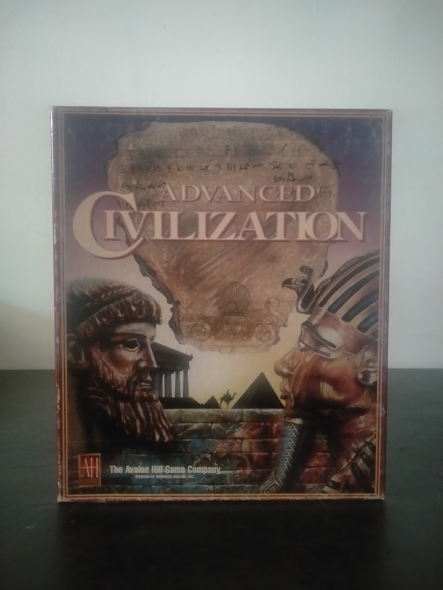

Ficha #000103
Advanced Civilization
Advanced Civilization es la adaptación para PC del juego de mesa homónimo de Avalon Hill, heredero directo de Civilization y centrado en la evolución de grandes culturas de la Antigüedad mediterránea. A diferencia de un wargame convencional, su núcleo está en la expansión territorial, el comercio, la gestión demográfica, la adquisición de avances culturales y tecnológicos, la diplomacia y la resistencia ante calamidades como hambrunas, revueltas, guerras civiles o invasiones bárbaras. La versión para MS-DOS conserva el enfoque estratégico de larga duración del tablero y permite partidas con varios jugadores, incluyendo juego asistido por correo electrónico, un rasgo especialmente representativo de la estrategia compleja de PC previa a la generalización del multijugador online moderno. Esta edición Big Box de The Avalon Hill Game Company tiene valor documental por trasladar al ordenador una obra de referencia del juego de civilizaciones, con abundante material impreso de consulta y ayudas propias de las adaptaciones de tablero de mediados de los años noventa.
- Formato
- Big Box
- Plataforma
- MsDos
- Género
- Estrategia por turnos 4X Gestión de civilizaciones Simulación histórica Adaptación de juego de mesa
- Serie
- Todos Big Box
- Desarrollador
- The Avalon Hill Game Company
- Distribuidor
- The Avalon Hill Game Company
- EAN
- —
Contenido de la edición
- Caja Big Box
- CD-ROM
- Reference Manual
- Loading Instructions
- Carta de avances Man & Machine
- Avalon Hill Universal Games & Parts List
- Sobre de correspondencia o registro de The Avalon Hill Game Company
Preservación
- Protección
- No determinado
- Formato recomendado
- ISO
- Jugable en virtualización
- Sí
Edición en CD-ROM para MS-DOS. Para preservación se recomienda crear una imagen completa del disco, documentar la versión del soporte y digitalizar el manual de referencia, las instrucciones de carga y la carta de avances, ya que forman parte esencial de la experiencia original y de la consulta durante la partida. La ejecución virtual es viable en DOSBox o entorno DOS equivalente, pendiente de verificar si la edición concreta realiza comprobación de soporte durante la ejecución.